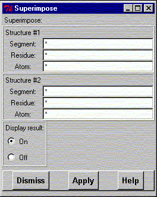

Superimpose two structures by giving the atoms that should match. The number of atoms in the two sets must match but they do not necessarily have to be the same atoms.
Give the atoms for the two structures and press the Apply button. It is possible to display a short or a long display list of the matching structures. Select the one you want.

Line command: see calculate command
**************************************************************************
LUL/1996
**************************************************************************